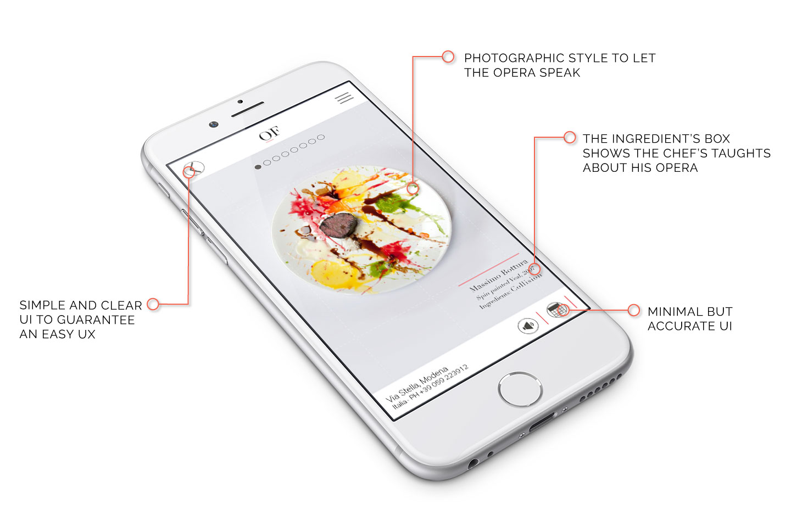

OSTERIA FRANCESCANA
BRIEF
Creation of a Digital Experience for the 3 Michelin stars restaurant Osteria Francescana. The aim is to differenciate the restaurant Experience with a Digital one that has to be worth feeling as the restaurant.
CONCEPT
For this porpouse I choose to show in Digital what clients in restaurant rarely can feel, the history of each creation, genially crafted by chef Massimo Bottura using colours, concepts and sinphonies to convey a work of art.
That’s why I basically created an art Gallery, which exploites the digital media to convey a feeling or emotions to User that creates a bond with dishes even before or without tasting them for real.
It’s a sort of non conventional online menu which as ingredients has the phylosophy of the autor that animates sorrounded by a combined sinphony that changes from dish to dish, as Massimo Bottura is used to do.
IN DETAIL
Follow me on
Copyright © Roberta Gardiman 2016